2. 数学¶
| 著者: | Masato |
|---|
2.1. 概要¶
数学について学んだことをまとめてます。取り扱う分野は主に線形代数と確率統計になります。
2.2. 確率統計¶
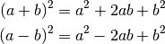
こんな感じに書いていきます。
尤度関数¶
尤度関数の概念は「サンプリングしてデータが観測された後、 そのデータは元々どういうパラメータをもつ確率分布から生まれたものだったか？」 という問いに答えるもの。 逆確率的なベイズの定理っぽさがあると感じる。ここで、正規分布について示す。
import matplotlib.pyplot as plt
import matplotlib.cm as cm
import numpy as np
import seaborn as sns
import numpy.random as rd
m = 10
s = 3
min_x = m-4*s
max_x = m+4*s
x = np.linspace(min_x, max_x, 201)
y = (1/np.sqrt(2*np.pi*s**2))*np.exp(-0.5*(x-m)**2/s**2)
plt.figure(figsize=(8,5))
plt.xlim(min_x, max_x)
plt.ylim(0,max(y)*1.1)
plt.plot(x,y)
plt.show()
ここで、標本が10個手に入り、 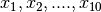 が正規分布に従うことが わかっているが、平均 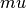 標準偏差 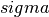 の2つのパラメータの値 がどれくらいなのか不明であるという状況を考える。
plt.figure(figure=(8,2))
rd.seed(7)
data = rd.normal(10, 3, 10, )
plt.scatter(data, np.zeros_like(data), c="r", s=50)
「10個の標本がこの値となった同時分布」を考える。 また、この10個の標本はidd(独立同一分布:同じ分布から独立にとられた標本)である と仮定する。独立なので、それぞれの確率密度の積として表せるので、
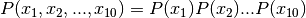
となる。ここで、 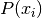 は全て正規分布としていたので、
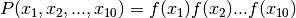
としても良い。これをさらに展開していくと、
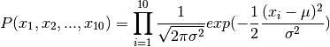
これは標本10個の同時確率密度関数である。しかし、今回標本は実現値として持っているので、不確定な確率的な値ではない。
確定値である。むしろ分かっていないのは、平均  、標準偏差
、標準偏差  の2つのパラメータである。
なので、
の2つのパラメータである。
なので、  は定数と考え、 、 であると宣言し直したものを尤度(likelihood)と
定義し、
は定数と考え、 、 であると宣言し直したものを尤度(likelihood)と
定義し、
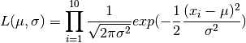
式自体は変わらないが、意味合いが全く異なる。これをグラフにして理解する。 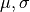 が不明なので、仮に 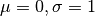 だと思って、グラフを書くと、